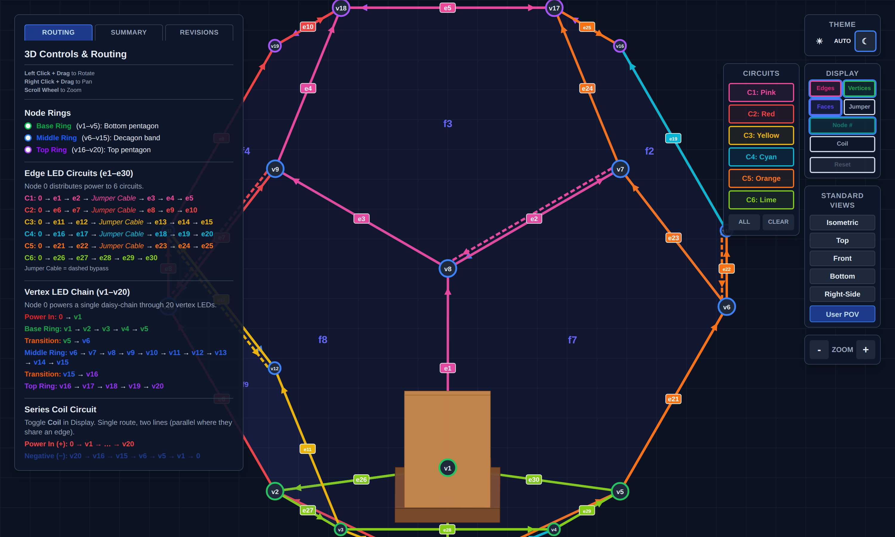

NaoDec Build — Step 6: Move-In — Scent · Subwoofer · Chair
Revision: 1.0 Date: 2026-07-14 Status: Drafted from the author's outline + decisions 1, 2, 4, 5, 9. Equipment models and mains routing TBD (see Open Items).
Purpose
One move-in wave (decision 9④): bring the scent atomizer unit, the subwoofer, and the chair in through the door, position the chair on its footing guide, then route all their cables out at node 1.
Quick Reference
| Item | Placement | Signal/drive | Power |
|---|---|---|---|
| Scent atomizer/mist unit | beside the subwoofer | 4 drive lines from the Waveshare relay board in the controller unit (decision 4) | via drive lines (12 V atomizer branch) |
| Subwoofer | on the platform, left of the chair | 3.5 mm jack direct from the Mac mini (decision 2) | own mains — inside the structure (flag) |
| Chair | center, facing v1, legs in the Step 1.3 position locks | — | — |
| 4× transducers in the chair | back set (upper back + lower back) · seat set (left seat + right seat) | 2 × GAB8 channels (decision 2) | via GAB8 |
| Media playback controller | under the right armrest | LAN: router (in the controller unit) → node 1 → chair → W5500 RJ45 | local 5 V/2 A USB adapter — mains at the chair (flag) |

Inside view with the chair prop — the chair faces v1 (bottom center). Snapshot ofNaoDec_3D_Vertex_and_Edges_LED_Mapping_Rev1.3.html (User POV).
6.1 Scent atomizer unit in
- Carry the atomizer/mist unit (4 × JY-M27AO discs per
NaoDec_Scent_Controller_Schematic_Rev2.0.html) through the door; stage it at the subwoofer position (left of chair) — final placement after the sub is in. - The Waveshare board does not move in — it stays in the controller unit (decision 4); only mist hardware and its drive lines are inside.
- Mind drip/condensation orientation: mist outlet away from the media controller, LED strips, and fabric (see Safety).
6.2 Subwoofer in
- Carry in through the door over the base-edge LED strips — lay protection over the strips on the carry path first (e26–e30 are freshly installed).
- Place on the platform, left of the chair position, clear of the door's swing/egress path.
- Its 3.5 mm line runs to the Mac mini (outside, on the table next to the controller unit); its mains lead is an inside-the-structure power run — routing TBD (Open Item #3).
6.3 Chair in + positioning
- Confirm door aperture vs. chair dimensions before lifting (unverified — Open Item #1).
- Carry in over the protected base edges; set the legs into the Step 1.3 footing-guide locks; engage the locks. The chair faces v1.
- Transducers — fit before or after carry-in per what access allows (author's call): back set at upper + lower back, seat set at left + right seat. Each set wires as one GAB8 channel pair run (2 runs total).
- Mount the media playback controller under the right armrest with its switches and volume control reachable by the seated occupant. Its ESP32 lives in this enclosure by design — moved out of the controller unit because panel signal wires don't tolerate length (see the Placement Requirement in
NaoDec_Media_Playback_Controller_Build_and_Max_Setup.md§1). Keep its panel runs ≤ 0.5 m per that doc. - Plug the W5500's RJ45 with the LAN run (next section); the controller's 5 V/2 A USB adapter needs mains at the chair (Open Item #3).
6.4 Route all cables to node 1
- Dress every run to the v1 corner and out the pass-through:
XDCR-BACK,XDCR-SEAT,LAN-CHAIR,SUB-3.5,SCENT-1…4. Label both ends. - Keep the floor runs out of the door→chair walk path, or under ramped protection (Step 1 Open Item #7).
- Landing happens in Step 8 (GAB8, router, Waveshare, Mac mini).
Safety
- De-energized work: Steps 3–5 wiring is all in place around you — nothing is connected to a PSU yet, and it stays that way until Step 9.
- Platform load — chair + occupant + subwoofer now sit on a stack whose load rating is still unspecified (Step 1 Safety). The gate below inherits that requirement.
- Egress — subwoofer + scent unit sit between the occupant and the door quadrant; keep a clear walk path.
- Mist near electronics — atomizer output must not condense onto the media controller, strips, or connectors; fragrance dosing limits for an enclosed occupant are unassessed (Open Item #5).
Release Gate
| Gate | Required Result |
|---|---|
| Chair | Legs locked in the footing guides; no shift under test load; facing v1 |
| Transducers | Both sets secured in the chair, runs labeled |
| Media controller | Mounted under right armrest; panel runs ≤ 0.5 m; RJ45 connected |
| Subwoofer + scent unit | Placed left of chair, secured, clear of egress |
| Cables | All runs labeled and at node 1 with service loops; walk path protected |
| Base-edge LEDs | Undamaged after carry-ins (re-run the Step 4 continuity spot-check) |
Open Items
- Door aperture vs. chair dimensions — unverified; measure both before move-in day.
- Transducer models/impedance vs. GAB8 channel rating; per-set series/parallel wiring plan.
- Mains inside the structure — subwoofer mains + chair USB adapter: source, routing, and protection are unspecified (ties into index Open Item #4).
- Scent drive-line spec — length/gauge for controller unit → node 1 → atomizer unit (~2–3 m + interior run) vs. the schematic's fusing.
- Humidity/condensation + fragrance exposure for a person in an enclosed volume — nothing in the repo addresses either.
- Carry-in order within the wave (sub → scent → chair vs. chair last confirmed) and whether transducers fit before or after the chair enters.